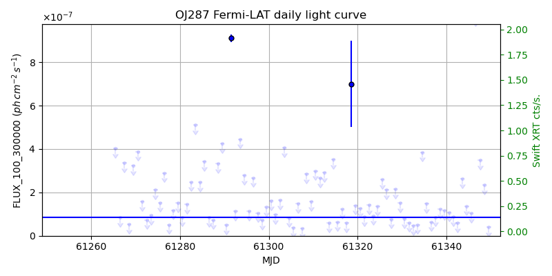
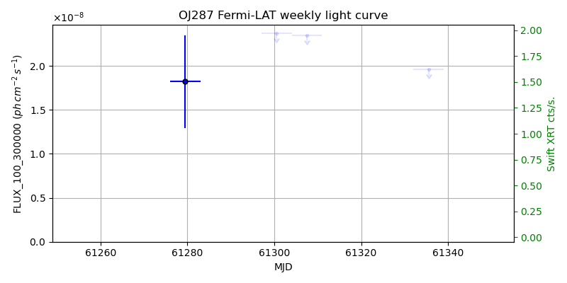
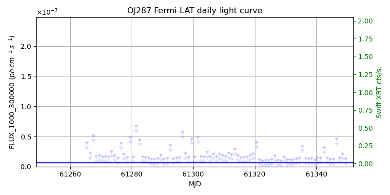
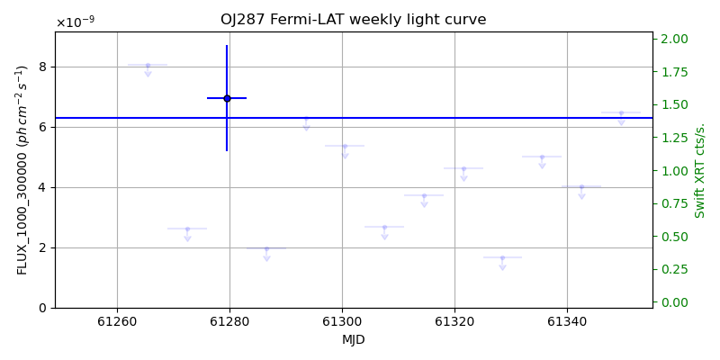

LAT Lightcurve site: https://fermi.gsfc.nasa.gov/ssc/data/access/lat/msl_lc/source/OJ_287
Swift site: https://www.swift.psu.edu/monitoring/source.php?source=OJ287
NED: Query
Time of last update of this page: UT: 2026-11-13 16:20 (MJD: 61357.681)
| Property | Value |
|---|---|
| R.A. | 8:54:48.96 |
| Dec. | 20:06:32.4 |
| z | 0.306 |
| 3FGL SpectrumType | LogParabola |
| 3FGL PL Index | |
| 3FGL Flux_100_300000 | 8.41e-08 1 / (s cm2) |
| 3FGL Flux_1000_300000 | 6.30e-09 1 / (s cm2) |
| 3FGL Flux >200 GeV | 5.46e-12 1 / (s cm2) |
| 3FGL Extrap. Crab >200 GeV | 0.02 |
| 3FGL Flux After EBL Absorption >200GeV | 1.90e-12 1 / (s cm2) |
| 3FGL EBL Crab Fraction >200GeV | 0.01 |

| MJD | dMJD | Flux | dFlux | Frac3FGL | FracCrab>200GeV | EBLFracCrab>200GeV |
|---|---|---|---|---|---|---|
| 61348.50 | 0.50 | 2.33e-07 | 0.00e+00 | 0.00 | 0.00 | 0.00 |
| 61349.50 | 0.50 | 3.96e-08 | 0.00e+00 | 0.00 | 0.00 | 0.00 |
| 61350.50 | 0.50 | 9.63e-08 | 0.00e+00 | 0.00 | 0.00 | 0.00 |
| 61351.50 | 0.50 | 8.12e-08 | 0.00e+00 | 0.00 | 0.00 | 0.00 |
| 61352.50 | 0.50 | 1.28e-07 | 0.00e+00 | 0.00 | 0.00 | 0.00 |

| MJD | dMJD | Flux | dFlux | Frac3FGL | FracCrab>200GeV | EBLFracCrab>200GeV |
|---|---|---|---|---|---|---|
| 61321.50 | 3.50 | 1.05e-07 | 0.00e+00 | 0.00 | 0.00 | 0.00 |
| 61328.50 | 3.50 | 2.92e-08 | 0.00e+00 | 0.00 | 0.00 | 0.00 |
| 61335.50 | 3.50 | 1.96e-08 | 0.00e+00 | 0.00 | 0.00 | 0.00 |
| 61342.50 | 3.50 | 3.61e-08 | 0.00e+00 | 0.00 | 0.00 | 0.00 |
| 61349.50 | 3.50 | 1.27e-07 | 0.00e+00 | 0.00 | 0.00 | 0.00 |

| MJD | dMJD | Flux | dFlux | Frac3FGL | FracCrab>200GeV | EBLFracCrab>200GeV |
|---|---|---|---|---|---|---|
| 61348.50 | 0.50 | 2.16e-08 | 0.00e+00 | 0.00 | 0.00 | 0.00 |
| 61349.50 | 0.50 | 1.33e-08 | 0.00e+00 | 0.00 | 0.00 | 0.00 |
| 61350.50 | 0.50 | -1.00e+00 | 0.00e+00 | 0.00 | 0.00 | 0.00 |
| 61351.50 | 0.50 | 2.21e-08 | 0.00e+00 | 0.00 | 0.00 | 0.00 |
| 61352.50 | 0.50 | 1.85e-08 | 0.00e+00 | 0.00 | 0.00 | 0.00 |

| MJD | dMJD | Flux | dFlux | Frac3FGL | FracCrab>200GeV | EBLFracCrab>200GeV |
|---|---|---|---|---|---|---|
| 61321.50 | 3.50 | 4.62e-09 | 0.00e+00 | 0.00 | 0.00 | 0.00 |
| 61328.50 | 3.50 | 1.65e-09 | 0.00e+00 | 0.00 | 0.00 | 0.00 |
| 61335.50 | 3.50 | 5.02e-09 | 0.00e+00 | 0.00 | 0.00 | 0.00 |
| 61342.50 | 3.50 | 4.02e-09 | 0.00e+00 | 0.00 | 0.00 | 0.00 |
| 61349.50 | 3.50 | 6.46e-09 | 0.00e+00 | 0.00 | 0.00 | 0.00 |
--------------------------------------------------------- Using user-supplied coords: 8:54:48.96 20:06:32.4 2000 --------------------------------------------------------- FLWO UT night of: 2026-11-14 Local Sid. @ Midnight: 03:09 Sunset (-15.0) (local, UT): 18:35 01:35 Sunrise (-15.0) (local, UT): 05:42 12:42 Moonrise (local, UT): Moonset (local, UT): 20:50 03:50 Moon phase: 0.22 --------------------------------------------------------- AzTime LSID UT Obj_el Obj_az Mn_el Mn_az Sep. --------------------------------------------------------- 18:35 21:44 01:35 -37.1 14.1 20.1 218.2 152.9 19:05 22:14 02:05 -35.1 22.5 16.0 223.7 153.1 19:35 22:44 02:35 -32.2 30.2 11.6 228.6 153.3 20:05 23:14 03:05 -28.7 37.3 6.9 233.2 153.5 20:35 23:44 03:35 -24.5 43.7 2.0 237.3 153.7 21:05 00:14 04:05 -19.8 49.5 -2.2 241.2 153.9 21:35 00:44 04:35 -14.8 54.6 -9.0 244.8 154.2 22:05 01:14 05:05 -9.4 59.3 -14.6 248.2 154.4 22:35 01:44 05:35 -2.4 63.6 -20.4 251.4 154.7 23:05 02:14 06:05 2.3 67.6 -26.2 254.5 154.9 23:35 02:44 06:35 8.1 71.4 -32.1 257.5 155.2 00:05 03:14 07:05 14.2 75.0 -38.1 260.6 155.5 00:35 03:45 07:35 20.4 78.5 -44.2 263.8 155.8 01:05 04:15 08:05 26.7 82.0 -50.2 267.1 156.1 01:35 04:45 08:35 33.1 85.5 -56.3 270.9 156.4 02:05 05:15 09:05 39.5 89.3 -62.4 275.3 156.8 02:35 05:45 09:35 45.8 93.3 -68.4 281.1 157.1 03:05 06:15 10:05 52.2 98.0 -74.2 289.9 157.4 03:35 06:45 10:35 58.5 103.7 -79.6 306.2 157.8 04:05 07:15 11:05 64.6 111.2 -83.2 343.5 158.1 04:35 07:45 11:35 70.3 122.1 -82.1 35.1 158.5 05:05 08:15 12:05 75.2 139.6 -77.4 61.2 158.8 05:35 08:45 12:35 78.1 167.9 -71.8 73.4 159.1 05:42 08:52 12:42 78.3 175.3 -70.5 75.2 159.2 --------------------------------------------------------- Dark hours >55 deg.: 2.39 srcstart (UT): 2026-11-14 10:18 srcend (UT): 2026-11-14 12:41